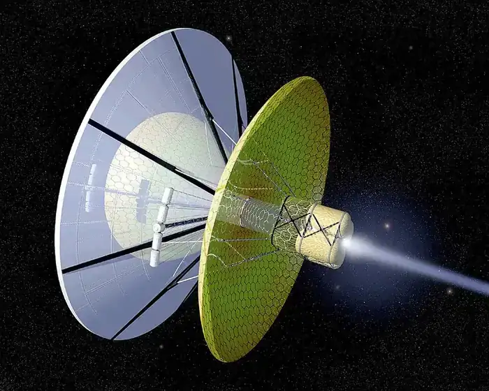

The scale and the arithmetic
Nikolai Kardashev's 1964 classification ranks civilisations by power: a type I uses the energy incident on its planet, about 1016 watts; type II the output of its star, about 1026; type III the output of its galaxy, around 1036. Earth is currently around 0.73 on a logarithmic interpolation.
Maps, diagrams and images


The relevant observation is not the scale but the doubling time. Energy use has historically doubled every few decades. Even at a modest rate, a civilisation that keeps growing crosses from type I to type III in something like a hundred thousand to ten million years — a geological instant, and far less than the age of the galaxy.
So either growth stops, or civilisations are rare, or something about the galaxy is quieter than we expect. Each of those is a bottleneck claim, and they have different observable consequences.
The physical candidates
Thermodynamics is the hardest constraint. Computation and work generate waste heat, and a galaxy-spanning civilisation would be visible in the mid-infrared — which is precisely what a Dyson swarm search looks for. The absence of an infrared excess in most surveyed galaxies is a real bound.
Coordination is the second. A type III civilisation spans 100,000 light years, so any central authority is a hundred millennia behind on every decision. That does not prevent expansion — it prevents central control, which suggests a patchwork rather than an empire.
Resources are a third, and the least binding: the asteroid belt contains enough material for habitats with the area of thousands of Earths, and the Sun's output is 1013 times human consumption. Scarcity is not what stops growth; the speed of light and the second law are.
They stay home. If most civilisations choose stability over expansion — the 'aestivation hypothesis' and various post-scarcity arguments — the galaxy stays empty without any physical limit.
They are short-lived. If the median technological civilisation lasts a few centuries, the galaxy is mostly empty most of the time and the silence needs no exotic explanation.
Expansion is not selected for. Evolutionary arguments about competition apply to biology on one planet; there is no reason to think a mature civilisation optimises for territory.
The archive labels this live debate because the thermodynamic limits are real and calculable, while the behavioural ones are unfalsifiable in practice — and the two are constantly mixed together in the literature.
Why it is in the archive
Because it converts a vague question — where is everybody? — into a set of quantitative bounds, and then shows that the bounds do not decide the answer.
Related: Dyson swarms, the Great Filter, the zoo hypothesis.
Sources for this page
- Wikipedia, “Kardashev scale” — the classification and its extensionsen.wikipedia.org
- Kardashev (1964), “Transmission of Information by Extraterrestrial Civilizations”en.wikipedia.org
- Wikipedia, “Dyson sphere” — the waste-heat signature searches look foren.wikipedia.org
- Sandberg, Armstrong & Cirkovic (2018), “That is not dead which can eternal lie” — the aestivation hypothesisarxiv.org
Open resources on this topic
- PapersOpen-access articles: DOAJ · PubMed Central · Internet Archive Scholar
- BooksPublic-domain and borrowable copies: Open Library · Project Gutenberg · Google Books · Internet Archive
Cite this page
Momin, S. (2026). Kardashev Bottlenecks. The Larger World Archive. https://drsamonline.github.io/LARGE_GLOBE/kardashev-bottlenecks.htmlMomin, Sohil. “Kardashev Bottlenecks.” The Larger World Archive, 2026, https://drsamonline.github.io/LARGE_GLOBE/kardashev-bottlenecks.html.Momin, Sohil. “Kardashev Bottlenecks.” The Larger World Archive, 2026. https://drsamonline.github.io/LARGE_GLOBE/kardashev-bottlenecks.html.@misc{kardashev2026kardashev,
author = {Momin, Sohil},
title = {Kardashev Bottlenecks},
year = {2026},
howpublished = {The Larger World Archive},
url = {https://drsamonline.github.io/LARGE_GLOBE/kardashev-bottlenecks.html},
note = {Last reviewed 20 November 2026}
}Last reviewed 20 November 2026 · Corrections policy · this page is not peer reviewed